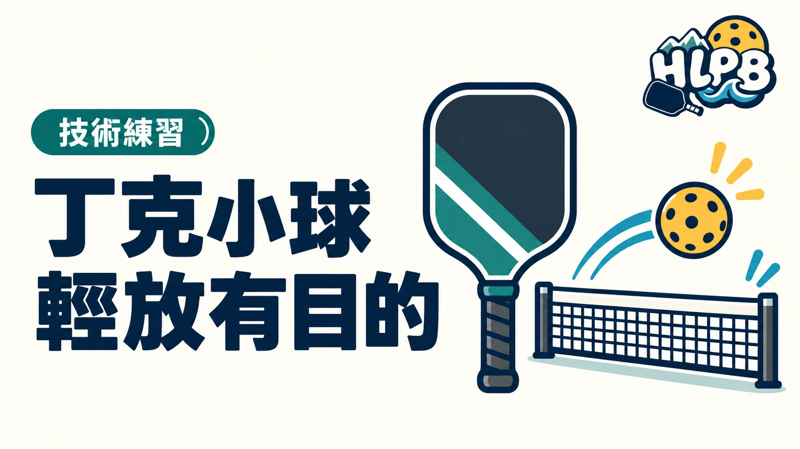

認識丁克的用途、揮拍幅度與落點控制，把小球練得有目的。
丁克（Dink）通常是在非截擊區線附近，將球輕送過網，讓球落在對方非截擊區的打法。它的價值在於降低對手容易強攻的機會，並透過落點調動對手，不只是把力氣放小而已。
丁克與第三拍放短的差別
這篇談網前小球；第三拍放短則通常從更後方處理接發球。兩者都可能落在非截擊區，但距離、準備與場上目的不同。
小球高度與落點怎麼看
| 重點 | 注意什麼 |
|---|---|
| 動作縮小 | 球拍保持在身前，以簡短動作控制球，避免大幅拉拍。 |
| 握拍不僵硬 | 放鬆但仍能穩住拍面，別把小球當成用力推球。 |
| 先穩再換落點 | 先能連續控制高度與深度，再練直線、斜線或中間方向。 |
小球要能過網，也不要輕碰一下就讓球浮高，變成好攻的球。
常見問題
打丁克可以踩進非截擊區嗎？
球落地後可以進入區內擊球；若是截擊，則不能碰區域或線，也不能因慣性踩入。
丁克越貼網越好嗎？
不是只看過網高度。還要看落點、成功率，以及球是否容易被對手攻擊。
跟著影片看動作
丁克的五個練習重點
PrimeTime Pickleball · 英文
觀察丁克的控制與準備，不必把小球當成用力揮拍。
教材來源 ↗ · 英文影片可查看字幕設定，是否有中文字幕依原頻道提供為準。影片動作是教學參考，規則仍以現行規則書與賽事章程為準。
參考來源
資料核對：2026/10/11。這是技術入門整理；動作細節可依教練指導調整。
HLPB 編輯整理｜最後查證：2026-10-12